先把 U06 做好的整個資料夾（含 site/、部署紀錄.md）按右鍵壓縮成 zip。
打開 isleforge-tw.netlify.app，首頁按「🔄 更新已做好的島」。
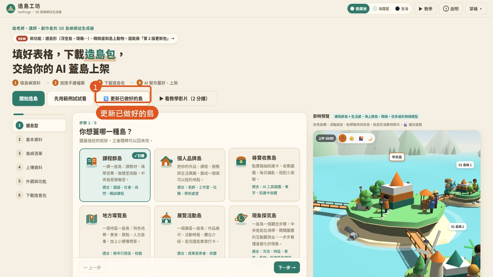
選剛剛壓縮的 zip，或直接拖進來。
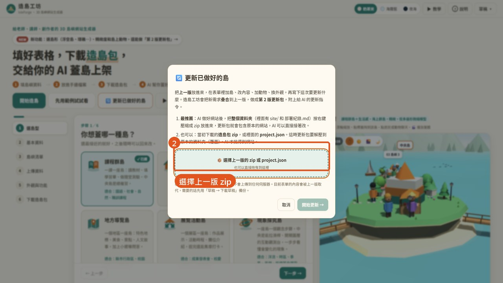
有 site/、有部署紀錄，都是綠勾勾，按「開始更新」。
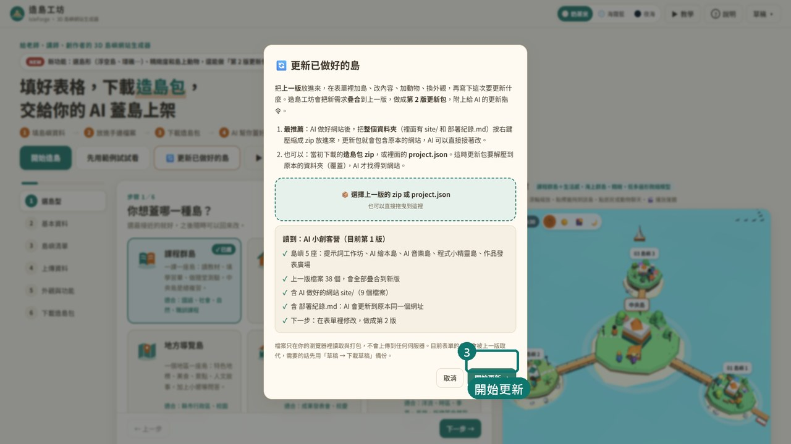
上方會顯示「更新模式：第 1 版 → 第 2 版」。
步驟 3 按「＋ 新增一座島」，填名稱、一句介紹，按「更多」寫內容重點。
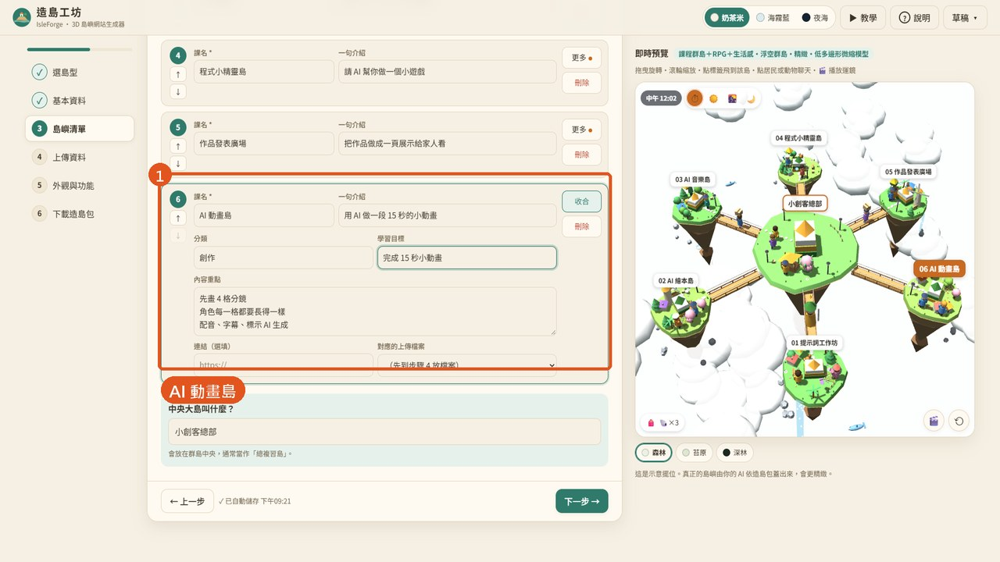
步驟 5「地景點綴」勾彩旗串、噴泉廣場。
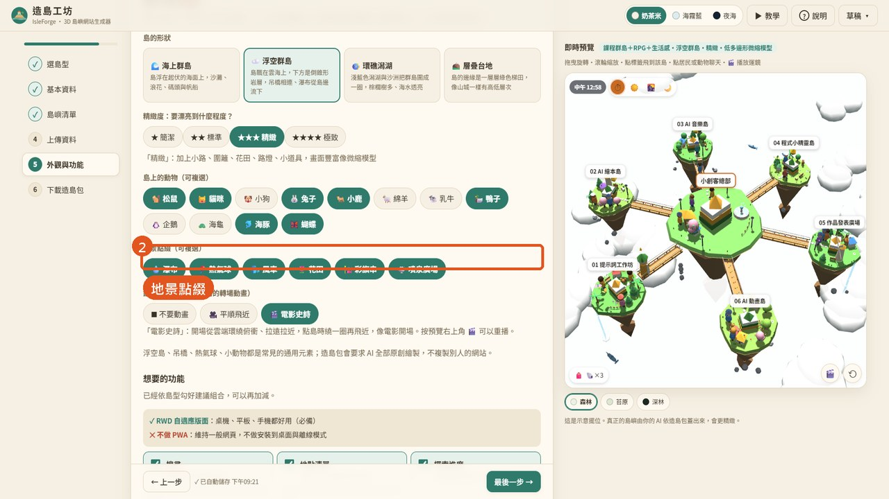
步驟 6 勾更新種類、寫下「這次要更新什麼」；下方會列出自動比對的變更。
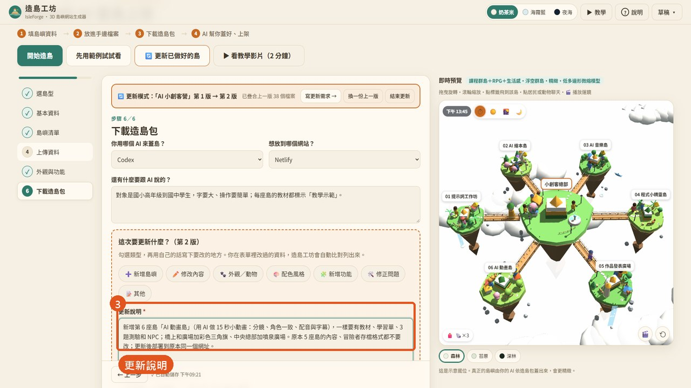
更新包解壓縮後，在 Codex 建新專案、選這個資料夾。
按「下載第 2 版更新包」，再按「複製給 AI 的指令」。
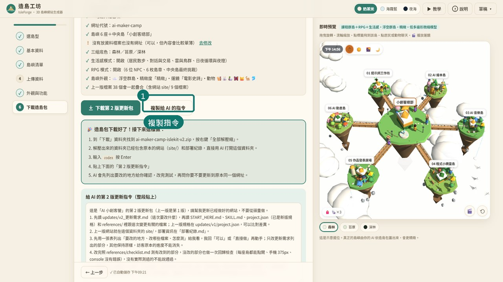
貼上、送出；它會先列變更表、問 1～2 個問題。回覆：「1 同意、2 同意，可以，直接做。全部測試通過後先停下來回報，不要部署。」
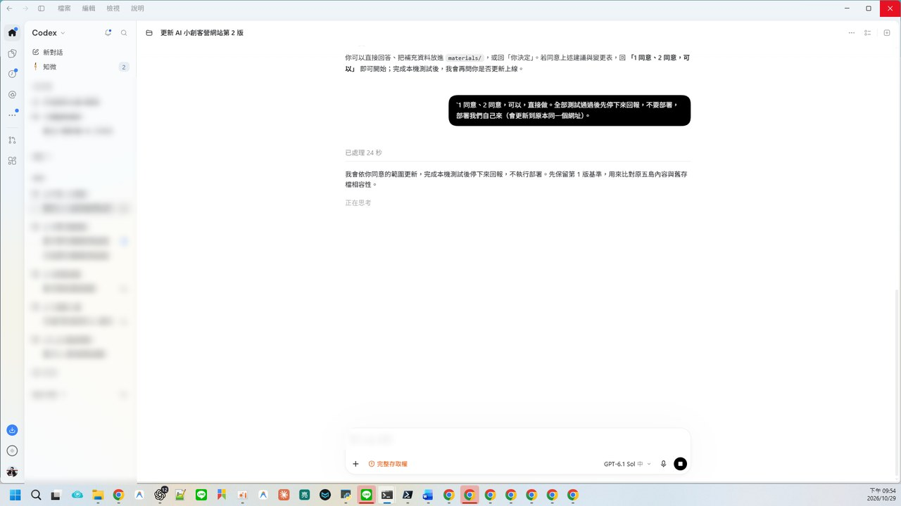
約 14 分鐘：231 項本機檢查通過，舊存檔與接關碼相容，沒有自己部署。
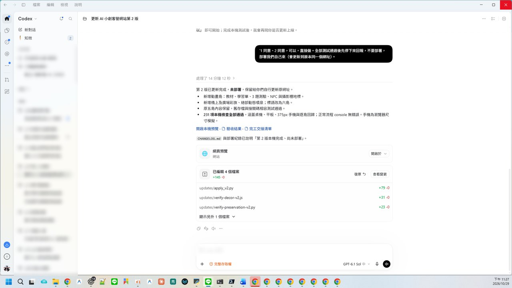
部署 site/ 到原本的網站（看部署紀錄.md）。
npx --yes netlify-cli deploy --dir site --prod
第一次在這個資料夾部署會問要連哪個網站——選 U06 那一個。
同一個網址：多了 AI 動畫島、彩旗與噴泉。
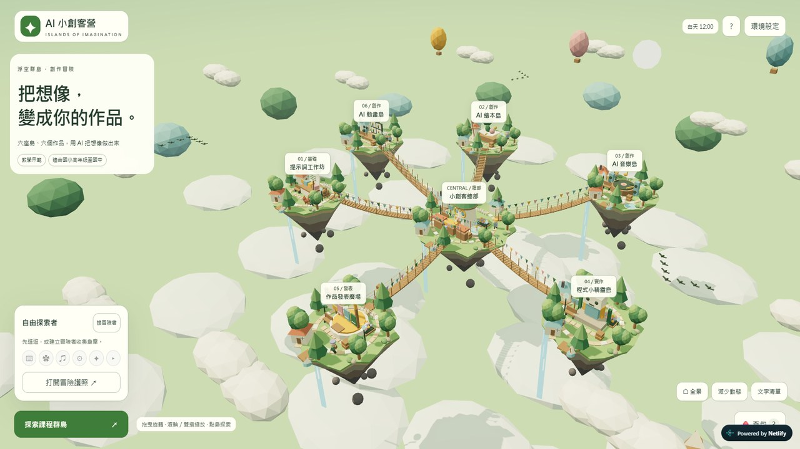
六座島都在；學生原本的島章與學習單保留。
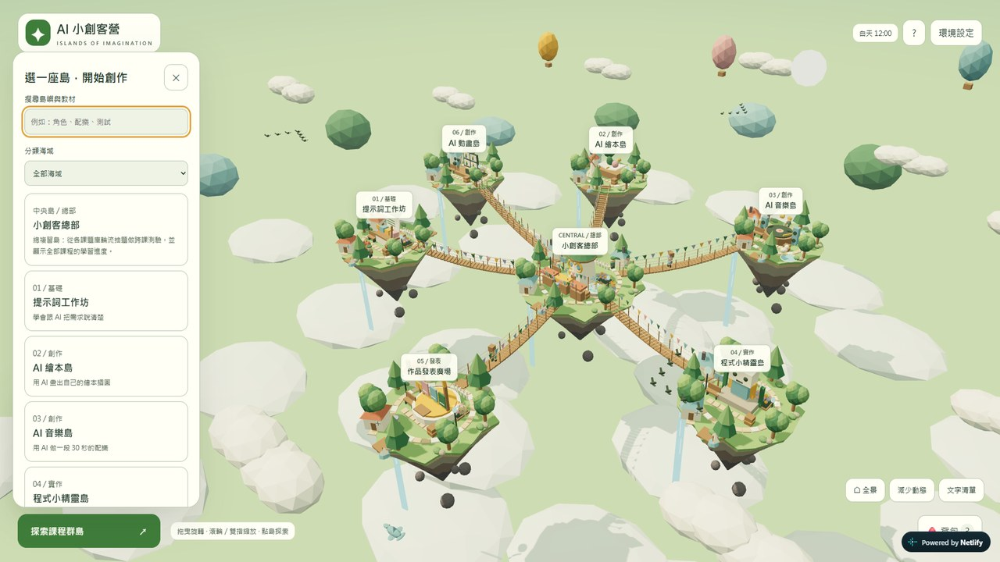
本機：雙擊資料夾裡的 啟動網站.cmd；線上：直接開原本的網址。
把這次的資料夾再壓成 zip → 造島工坊「更新已做好的島」→ 下載第 3 版 → 交給 Codex。每一版的變更都記在 CHANGELOG.md。